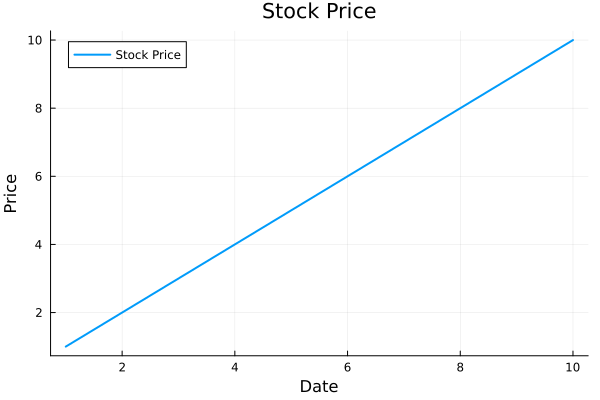

I Am Like Python and R But Not Quite
·
Mehmet Dogan
·
9 min read
A mini-funny Julia crash course for Python and R users
Hello, World! I’m Julia. I’m like Python and R but I have my personality.
You can run me online to follow this tutorial if you haven’t installed me already.
Printing
I can print everything using print() or println()
- print(): prints on the same line
- println(): adds a new line to the end of the output
println("Hello, I'm Julia")
## Hello, I'm Julia
println("I'm like like Python and R, but not quite")
## I'm like like Python and R, but not quite
Package management
Installing a package
I install new packages using:
- Pkg.add(“package_name”)
using Pkg
#Pkg.add("DataFrames")
Adding a package to current session
I add packages to my current session via using keyword:
- using package_name
using Plots # similar to base R plot, matplotlib in Python
using Gadfly # similar to ggplot2, not similar to anything in python - this was never achieved in Python
using RDatasets # equivalent of rdatasets package
using DataFrames # similar to data.frame, data.table and dplyr in R, pandas in Python
using CSV # similar to read.csv, readr in R, pandas in Python
using Statistics # similar to base R, base Python
using Dates # similar to date in base R and datetime in python
Vectors
I’m same as python
my_vector = [1, 2, 3, 4, 5]
## 5-element Vector{Int64}:
## 1
## 2
## 3
## 4
## 5
Control Flow
If statement
- I’m like Python but without :
- like R but w/o ugly { }s
- I must end with end
- Unlike Python I don’t need indentation but I prefer to have it.
if 5 > 0
println("Print me")
elseif 10 > 0 # - I have elseif in the middle, just like R
println("Print me instead")
else
println("Better to print me")
end
## Print me
While loop
- I’m like Python but without :
- like R but w/o ugly { }s
- I must end with end
- Unlike Python I don’t need indentation but I prefer to have it.
- If I want to access a global variable inside of me I set global variable_name.
x = 5;
while x > 0
global x
println("Print me $x")
x -= 1
end
## Print me 5
## Print me 4
## Print me 3
## Print me 2
## Print me 1
For loop
- I’m like Python but without :
- like R but w/o ugly { }s
- I must end with end
- Unlike Python I don’t need indentation but I prefer to have it.
for i in 1:10
print(i, ",")
end
## 1,2,3,4,5,6,7,8,9,10,
Functions
- I’m like R but w/o ugly { }s
- I must end with end
- Unlike Python I don’t need indentation but I prefer to have it.
function square_number(y)
return y^2
end
## square_number (generic function with 1 method)
Calling a function
I’m just like R and Python
square_number(10)
## 100
I’m Awesome!
square_number.([1,2,3,4,5]) # it will square each number in the vector
## 5-element Vector{Int64}:
## 1
## 4
## 9
## 16
## 25
DataFrames
I’m like R and a bit of Python
df = DataFrame(Stock=["A", "B", "C", "D"], Price=1:4)
## 4×2 DataFrame
## Row │ Stock Price
## │ String Int64
## ─────┼───────────────
## 1 │ A 1
## 2 │ B 2
## 3 │ C 3
## 4 │ D 4
Slicing DataFrames
I’m like R and Python but not quite.
- I don’t need annoying loc and iloc
- I don’t complain about copying.
df.Stock # all elements of Stock column
## 4-element Vector{String}:
## "A"
## "B"
## "C"
## "D"
df[:, "Stock"] # all rows of Stock column
## 4-element Vector{String}:
## "A"
## "B"
## "C"
## "D"
df[:, 2] # all rows of Price column
## 4-element Vector{Int64}:
## 1
## 2
## 3
## 4
df[1:3, :] # first 3 rows of each column
## 3×2 DataFrame
## Row │ Stock Price
## │ String Int64
## ─────┼───────────────
## 1 │ A 1
## 2 │ B 2
## 3 │ C 3
df[[begin, end], "Price"] # first and the last rows of Price column
## 2-element Vector{Int64}:
## 1
## 4
df[[1,3], 2] # the first and the third rows of Price (2nd) column
## 2-element Vector{Int64}:
## 1
## 3
# Another DataFrame
stockPrices = DataFrame(
Date = ["2022-01-31","2022-02-28","2022-03-31","2022-04-30","2022-05-31","2022-06-30","2022-07-31","2022-08-31","2022-09-30","2022-10-31","2022-11-30","2022-12-31",
"2022-01-31","2022-02-28","2022-03-31","2022-04-30","2022-05-31","2022-06-30","2022-07-31","2022-08-31","2022-09-30","2022-10-31","2022-11-30","2022-12-31"],
Stock=["TSLA","TSLA","TSLA","TSLA","TSLA", "TSLA","TSLA","TSLA","TSLA","TSLA","TSLA","TSLA",
"NFLX","NFLX","NFLX","NFLX","NFLX","NFLX","NFLX","NFLX","NFLX","NFLX","NFLX","NFLX"],
Price=[312.24,290.14,359.2,290.25,252.75,224.47,297.15,275.61,265.25,227.54,194.7,121.82,
427.14,394.52,374.59,190.36,197.44,174.87,224.9,223.56,235.44,291.88,305.53,291.12]
)
## 24×3 DataFrame
## Row │ Date Stock Price
## │ String String Float64
## ─────┼─────────────────────────────
## 1 │ 2022-01-31 TSLA 312.24
## 2 │ 2022-02-28 TSLA 290.14
## 3 │ 2022-03-31 TSLA 359.2
## 4 │ 2022-04-30 TSLA 290.25
## 5 │ 2022-05-31 TSLA 252.75
## 6 │ 2022-06-30 TSLA 224.47
## 7 │ 2022-07-31 TSLA 297.15
## 8 │ 2022-08-31 TSLA 275.61
## ⋮ │ ⋮ ⋮ ⋮
## 18 │ 2022-06-30 NFLX 174.87
## 19 │ 2022-07-31 NFLX 224.9
## 20 │ 2022-08-31 NFLX 223.56
## 21 │ 2022-09-30 NFLX 235.44
## 22 │ 2022-10-31 NFLX 291.88
## 23 │ 2022-11-30 NFLX 305.53
## 24 │ 2022-12-31 NFLX 291.12
## 9 rows omitted
Converting a String column to Date
I have my own syntax.
stockPrices.Date = Date.(stockPrices.Date, "yyyy-mm-dd")
## 24-element Vector{Date}:
## 2022-01-31
## 2022-02-28
## 2022-03-31
## 2022-04-30
## 2022-05-31
## 2022-06-30
## 2022-07-31
## 2022-08-31
## 2022-09-30
## 2022-10-31
## ⋮
## 2022-04-30
## 2022-05-31
## 2022-06-30
## 2022-07-31
## 2022-08-31
## 2022-09-30
## 2022-10-31
## 2022-11-30
## 2022-12-31
### Frist 5 elements - I'm like R and Python but "first" instead of "head"
first(stockPrices, 5)
## 5×3 DataFrame
## Row │ Date Stock Price
## │ Date String Float64
## ─────┼─────────────────────────────
## 1 │ 2022-01-31 TSLA 312.24
## 2 │ 2022-02-28 TSLA 290.14
## 3 │ 2022-03-31 TSLA 359.2
## 4 │ 2022-04-30 TSLA 290.25
## 5 │ 2022-05-31 TSLA 252.75
### Last 5 elements - I'm like R and Python but "last" instead of "tail"
last(stockPrices, 5)
## 5×3 DataFrame
## Row │ Date Stock Price
## │ Date String Float64
## ─────┼─────────────────────────────
## 1 │ 2022-08-31 NFLX 223.56
## 2 │ 2022-09-30 NFLX 235.44
## 3 │ 2022-10-31 NFLX 291.88
## 4 │ 2022-11-30 NFLX 305.53
## 5 │ 2022-12-31 NFLX 291.12
Importing and exporting data
Writing a DataFrame to csv
I’m like R and Python but I have my own syntax.
- I first accept filename.csv
- and then DataFrame name
CSV.write("stockPrices.csv", stockPrices)
## "stockPrices.csv"
Reading data from csv as DataFrame
I am neither Python nor R.
- First import me
- and then hug me with DataFrame()
stockPrices = DataFrame(CSV.File("stockPrices.csv"))
## 24×3 DataFrame
## Row │ Date Stock Price
## │ Date String7 Float64
## ─────┼──────────────────────────────
## 1 │ 2022-01-31 TSLA 312.24
## 2 │ 2022-02-28 TSLA 290.14
## 3 │ 2022-03-31 TSLA 359.2
## 4 │ 2022-04-30 TSLA 290.25
## 5 │ 2022-05-31 TSLA 252.75
## 6 │ 2022-06-30 TSLA 224.47
## 7 │ 2022-07-31 TSLA 297.15
## 8 │ 2022-08-31 TSLA 275.61
## ⋮ │ ⋮ ⋮ ⋮
## 18 │ 2022-06-30 NFLX 174.87
## 19 │ 2022-07-31 NFLX 224.9
## 20 │ 2022-08-31 NFLX 223.56
## 21 │ 2022-09-30 NFLX 235.44
## 22 │ 2022-10-31 NFLX 291.88
## 23 │ 2022-11-30 NFLX 305.53
## 24 │ 2022-12-31 NFLX 291.12
## 9 rows omitted
Group by and combine
I have my own syntax for groupby.
- I’m first grouping by
- then combining
grp = groupby(stockPrices, :Stock)
## GroupedDataFrame with 2 groups based on key: Stock
## First Group (12 rows): Stock = "TSLA"
## Row │ Date Stock Price
## │ Date String7 Float64
## ─────┼──────────────────────────────
## 1 │ 2022-01-31 TSLA 312.24
## 2 │ 2022-02-28 TSLA 290.14
## ⋮ │ ⋮ ⋮ ⋮
## 11 │ 2022-11-30 TSLA 194.7
## 12 │ 2022-12-31 TSLA 121.82
## 8 rows omitted
## ⋮
## Last Group (12 rows): Stock = "NFLX"
## Row │ Date Stock Price
## │ Date String7 Float64
## ─────┼──────────────────────────────
## 1 │ 2022-01-31 NFLX 427.14
## 2 │ 2022-02-28 NFLX 394.52
## ⋮ │ ⋮ ⋮ ⋮
## 12 │ 2022-12-31 NFLX 291.12
## 9 rows omitted
avg_prices = combine(grp, :Price => mean)
## 2×2 DataFrame
## Row │ Stock Price_mean
## │ String7 Float64
## ─────┼─────────────────────
## 1 │ TSLA 259.26
## 2 │ NFLX 277.613
Filtering
- I’m way better than Python,
- but slightly uglier than R
filter(row -> row.Stock == "NFLX", stockPrices) # filter values for Netflix
## 12×3 DataFrame
## Row │ Date Stock Price
## │ Date String7 Float64
## ─────┼──────────────────────────────
## 1 │ 2022-01-31 NFLX 427.14
## 2 │ 2022-02-28 NFLX 394.52
## 3 │ 2022-03-31 NFLX 374.59
## 4 │ 2022-04-30 NFLX 190.36
## 5 │ 2022-05-31 NFLX 197.44
## 6 │ 2022-06-30 NFLX 174.87
## 7 │ 2022-07-31 NFLX 224.9
## 8 │ 2022-08-31 NFLX 223.56
## 9 │ 2022-09-30 NFLX 235.44
## 10 │ 2022-10-31 NFLX 291.88
## 11 │ 2022-11-30 NFLX 305.53
## 12 │ 2022-12-31 NFLX 291.12
# you can use any name in place of row
filter(DonaldTrump -> DonaldTrump.Stock == "NFLX", stockPrices) # I will be gladly working as well
## 12×3 DataFrame
## Row │ Date Stock Price
## │ Date String7 Float64
## ─────┼──────────────────────────────
## 1 │ 2022-01-31 NFLX 427.14
## 2 │ 2022-02-28 NFLX 394.52
## 3 │ 2022-03-31 NFLX 374.59
## 4 │ 2022-04-30 NFLX 190.36
## 5 │ 2022-05-31 NFLX 197.44
## 6 │ 2022-06-30 NFLX 174.87
## 7 │ 2022-07-31 NFLX 224.9
## 8 │ 2022-08-31 NFLX 223.56
## 9 │ 2022-09-30 NFLX 235.44
## 10 │ 2022-10-31 NFLX 291.88
## 11 │ 2022-11-30 NFLX 305.53
## 12 │ 2022-12-31 NFLX 291.12
Plotting
Plotting with Plots.jl
- I’m similar to base plot in R, matplotlib in Python
- I’m way better than Python,
- and similar to R
Plots.plot(1:10, 1:10, label = "Stock Price", linewidth = 2, title = "Stock Price");
Plots.plot!(xlabel = "Date");
Plots.plot!(ylabel = "Price")

Plotting with Gadfly.jl
- I’m similar to ggplot2 in R,
- not similar to anything in Python. Python never succeeded in plotting.
- I’m way way way better than Python,
- but less sophisticated than R.
- I know R is by far the best in Plotting
- but I’m doing my best to catch it.
Gadfly.plot(stockPrices, x=:Date, y=:Price, Geom.line, color = :Stock)
## Plot(...)

Check this out to learn why I was created in the first place: